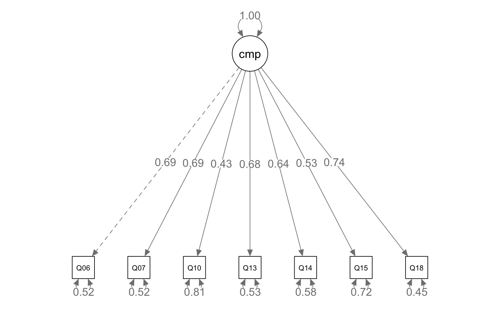
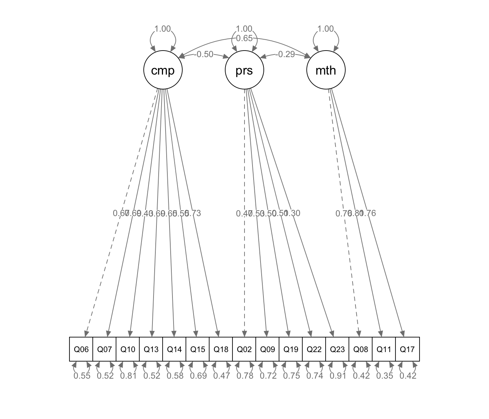

library(tidyverse)
library(haven)
library(lavaan)
library(semPlot)10 Confirmatory Factor Analysis
In exploratory factor analysis (Chapter 9), the data tell us how many factors there are and which items load on each. Confirmatory factor analysis (CFA) reverses the logic. We specify the factor structure in advance, based on theory or prior research, and then test how well that structure fits the data.
CFA is also the first step into structural equation modeling (SEM). We fit all of the models in this chapter with lavaan, the main R package for CFA and SEM, and draw them with semPlot.
10.1 The data
We return to the SPSS Anxiety Questionnaire (SAQ) from Chapter 9, with Q03 reverse-coded as before.
saq <- read_dta("data/saq.dta")
saq_clean <- saq |>
mutate(Q03R = 6 - Q03) |>
select(-Q03)10.2 A one-factor CFA
We start with the seven computer anxiety items from Chapter 9.
10.2.1 Specifying the model
lavaan models are written as text inside single quotes. The =~ operator means “is measured by.” The line below says that a latent factor called computers is measured by seven items.
computers_model <- 'computers =~ Q06 + Q07 + Q10 + Q13 + Q14 + Q15 + Q18'
computers_fit <- cfa(computers_model, data = saq_clean)
summary(computers_fit)lavaan 0.7-2 ended normally after 18 iterations
Estimator ML
Optimization method NLMINB
Number of model parameters 14
Number of observations 2571
Model Test User Model:
Test statistic 118.715
Degrees of freedom 14
P-value (Chi-square) 0.000
Parameter Estimates:
Standard errors Standard
Information Expected
Information saturated (h1) model Structured
Latent Variables:
Estimate Std.Err z-value P(>|z|)
computers =~
Q06 1.000
Q07 0.980 0.032 30.182 0.000
Q10 0.488 0.025 19.626 0.000
Q13 0.833 0.028 29.879 0.000
Q14 0.828 0.029 28.430 0.000
Q15 0.688 0.029 23.778 0.000
Q18 1.002 0.031 31.893 0.000
Variances:
Estimate Std.Err z-value P(>|z|)
.Q06 0.655 0.022 29.429 0.000
.Q07 0.635 0.022 29.491 0.000
.Q10 0.626 0.018 34.277 0.000
.Q13 0.480 0.016 29.775 0.000
.Q14 0.583 0.019 30.917 0.000
.Q15 0.733 0.022 33.167 0.000
.Q18 0.503 0.018 27.434 0.000
computers 0.603 0.033 18.535 0.00010.2.2 Setting the scale of the factor
A latent variable has no natural units, so we have to give it a scale. By default, lavaan fixes the loading of the first item to 1. This is called the marker variable method, and it is why Q06 has a loading of 1.000 and no standard error. The other loadings are then on the same scale as Q06.
Another option is to fix the factor’s variance to 1 and estimate every loading freely. In lavaan syntax, NA* frees a parameter and 1* fixes it to 1. The model below uses that approach. (std.lv = TRUE in cfa() is a shortcut that does the same thing.)
computers_model_var <- '
computers =~ NA*Q06 + Q07 + Q10 + Q13 + Q14 + Q15 + Q18
computers ~~ 1*computers
'10.2.3 Standardized estimates and model fit
Adding standardized = TRUE to summary() adds standardized loadings in the Std.all column. These can be read like correlations between each item and the factor. Adding fit.measures = TRUE adds the fit statistics.
summary(computers_fit, fit.measures = TRUE, standardized = TRUE)lavaan 0.7-2 ended normally after 18 iterations
Estimator ML
Optimization method NLMINB
Number of model parameters 14
Number of observations 2571
Model Test User Model:
Test statistic 118.715
Degrees of freedom 14
P-value (Chi-square) 0.000
Model Test Baseline Model:
Test statistic 5157.822
Degrees of freedom 21
P-value 0.000
User Model versus Baseline Model:
Comparative Fit Index (CFI) 0.980
Tucker-Lewis Index (TLI) 0.969
Loglikelihood and Information Criteria:
Loglikelihood user model (H0) -23240.697
Loglikelihood unrestricted model (H1) -23181.339
Akaike (AIC) 46509.394
Bayesian (BIC) 46591.323
Sample-size adjusted Bayesian (SABIC) 46546.841
Root Mean Square Error of Approximation:
RMSEA 0.054
90 Percent confidence interval - lower 0.045
90 Percent confidence interval - upper 0.063
P-value H_0: RMSEA <= 0.050 0.221
P-value H_0: RMSEA >= 0.080 0.000
Standardized Root Mean Square Residual:
SRMR 0.025
Goodness of Fit Index:
Goodness of Fit Index (GFI) 0.988
90 Percent confidence interval - lower 0.984
90 Percent confidence interval - upper 0.992
Parameter Estimates:
Standard errors Standard
Information Expected
Information saturated (h1) model Structured
Latent Variables:
Estimate Std.Err z-value P(>|z|) Std.lv Std.all
computers =~
Q06 1.000 0.777 0.692
Q07 0.980 0.032 30.182 0.000 0.761 0.691
Q10 0.488 0.025 19.626 0.000 0.379 0.432
Q13 0.833 0.028 29.879 0.000 0.647 0.683
Q14 0.828 0.029 28.430 0.000 0.643 0.644
Q15 0.688 0.029 23.778 0.000 0.534 0.529
Q18 1.002 0.031 31.893 0.000 0.778 0.739
Variances:
Estimate Std.Err z-value P(>|z|) Std.lv Std.all
.Q06 0.655 0.022 29.429 0.000 0.655 0.521
.Q07 0.635 0.022 29.491 0.000 0.635 0.523
.Q10 0.626 0.018 34.277 0.000 0.626 0.813
.Q13 0.480 0.016 29.775 0.000 0.480 0.534
.Q14 0.583 0.019 30.917 0.000 0.583 0.585
.Q15 0.733 0.022 33.167 0.000 0.733 0.720
.Q18 0.503 0.018 27.434 0.000 0.503 0.454
computers 0.603 0.033 18.535 0.000 1.000 1.000All standardized loadings are positive and significant. Most are between about 0.5 and 0.75, and Q10 has the weakest loading (0.43).
10.2.4 Judging model fit
CFA compares the covariances implied by the model to the covariances observed in the data. Several fit statistics summarize how close they are. Common guidelines are:
| Statistic | What it measures | Guideline for good fit |
|---|---|---|
| χ² test | Exact fit | Non-significant (p > .05) |
| CFI | Fit relative to a model with no correlations | ≥ 0.95 |
| TLI | Like CFI, with a penalty for complexity | ≥ 0.95 |
| RMSEA | Misfit per degree of freedom | ≤ 0.06 |
| SRMR | Average difference between observed and implied correlations | ≤ 0.08 |
The χ² test is significant, which is common in large samples like this one; it becomes sensitive to very small misfit. The other indices all meet the guidelines (CFI = 0.98, TLI = 0.97, RMSEA = 0.054, SRMR = 0.025). Taken together, the one-factor model appears to fit well. These guidelines are rules of thumb, not strict cutoffs, so report several indices and interpret them together.
10.2.5 Path diagrams
semPaths() draws the model. whatLabels = "std" labels each path with its standardized estimate.
semPaths(computers_fit, whatLabels = "std", edge.label.cex = 1.1)
In the diagram, the oval is the latent factor and the squares are the observed items. The curved arrows on the items are residual variances: the part of each item not explained by the factor.
10.3 Testing an additional item
In Chapter 9, adding Q23 lowered the alpha of the computer subscale. What does CFA say?
computers_model2 <- 'computers =~ Q06 + Q07 + Q10 + Q13 + Q14 + Q15 + Q18 + Q23'
computers_fit2 <- cfa(computers_model2, data = saq_clean)
summary(computers_fit2, fit.measures = TRUE, standardized = TRUE)lavaan 0.7-2 ended normally after 21 iterations
Estimator ML
Optimization method NLMINB
Number of model parameters 16
Number of observations 2571
Model Test User Model:
Test statistic 122.702
Degrees of freedom 20
P-value (Chi-square) 0.000
Model Test Baseline Model:
Test statistic 5182.747
Degrees of freedom 28
P-value 0.000
User Model versus Baseline Model:
Comparative Fit Index (CFI) 0.980
Tucker-Lewis Index (TLI) 0.972
Loglikelihood and Information Criteria:
Loglikelihood user model (H0) -26987.869
Loglikelihood unrestricted model (H1) -26926.518
Akaike (AIC) 54007.737
Bayesian (BIC) 54101.370
Sample-size adjusted Bayesian (SABIC) 54050.534
Root Mean Square Error of Approximation:
RMSEA 0.045
90 Percent confidence interval - lower 0.037
90 Percent confidence interval - upper 0.052
P-value H_0: RMSEA <= 0.050 0.866
P-value H_0: RMSEA >= 0.080 0.000
Standardized Root Mean Square Residual:
SRMR 0.022
Goodness of Fit Index:
Goodness of Fit Index (GFI) 0.990
90 Percent confidence interval - lower 0.986
90 Percent confidence interval - upper 0.993
Parameter Estimates:
Standard errors Standard
Information Expected
Information saturated (h1) model Structured
Latent Variables:
Estimate Std.Err z-value P(>|z|) Std.lv Std.all
computers =~
Q06 1.000 0.777 0.692
Q07 0.980 0.032 30.197 0.000 0.761 0.691
Q10 0.488 0.025 19.648 0.000 0.379 0.432
Q13 0.833 0.028 29.876 0.000 0.647 0.682
Q14 0.828 0.029 28.425 0.000 0.643 0.644
Q15 0.688 0.029 23.794 0.000 0.534 0.530
Q18 1.002 0.031 31.914 0.000 0.779 0.739
Q23 -0.132 0.029 -4.562 0.000 -0.103 -0.098
Variances:
Estimate Std.Err z-value P(>|z|) Std.lv Std.all
.Q06 0.655 0.022 29.439 0.000 0.655 0.520
.Q07 0.635 0.022 29.500 0.000 0.635 0.523
.Q10 0.625 0.018 34.276 0.000 0.625 0.813
.Q13 0.481 0.016 29.800 0.000 0.481 0.535
.Q14 0.583 0.019 30.937 0.000 0.583 0.585
.Q15 0.733 0.022 33.169 0.000 0.733 0.720
.Q18 0.503 0.018 27.440 0.000 0.503 0.453
.Q23 1.078 0.030 35.787 0.000 1.078 0.990
computers 0.603 0.033 18.540 0.000 1.000 1.000Somewhat surprisingly, the fit indices are about the same as before, and RMSEA even improves slightly. However, the standardized loading for Q23 is only −0.10. An item that barely relates to the factor adds degrees of freedom without adding much misfit, so overall fit can look fine. This is a good reminder to examine the loadings, not only the fit indices.
10.4 A second subscale
Five items appear to measure fear of negative evaluation from peers (Q02, Q09, Q19, Q22, and Q23):
peers_model <- 'peers =~ Q02 + Q09 + Q19 + Q22 + Q23'
peers_fit <- cfa(peers_model, data = saq_clean)
summary(peers_fit, fit.measures = TRUE, standardized = TRUE)lavaan 0.7-2 ended normally after 35 iterations
Estimator ML
Optimization method NLMINB
Number of model parameters 10
Number of observations 2571
Model Test User Model:
Test statistic 44.608
Degrees of freedom 5
P-value (Chi-square) 0.000
Model Test Baseline Model:
Test statistic 978.759
Degrees of freedom 10
P-value 0.000
User Model versus Baseline Model:
Comparative Fit Index (CFI) 0.959
Tucker-Lewis Index (TLI) 0.918
Loglikelihood and Information Criteria:
Loglikelihood user model (H0) -18417.898
Loglikelihood unrestricted model (H1) -18395.594
Akaike (AIC) 36855.796
Bayesian (BIC) 36914.317
Sample-size adjusted Bayesian (SABIC) 36882.544
Root Mean Square Error of Approximation:
RMSEA 0.056
90 Percent confidence interval - lower 0.041
90 Percent confidence interval - upper 0.071
P-value H_0: RMSEA <= 0.050 0.247
P-value H_0: RMSEA >= 0.080 0.004
Standardized Root Mean Square Residual:
SRMR 0.027
Goodness of Fit Index:
Goodness of Fit Index (GFI) 0.994
90 Percent confidence interval - lower 0.990
90 Percent confidence interval - upper 0.997
Parameter Estimates:
Standard errors Standard
Information Expected
Information saturated (h1) model Structured
Latent Variables:
Estimate Std.Err z-value P(>|z|) Std.lv Std.all
peers =~
Q02 1.000 0.413 0.486
Q09 1.749 0.124 14.094 0.000 0.723 0.572
Q19 1.161 0.090 12.873 0.000 0.480 0.436
Q22 1.263 0.092 13.700 0.000 0.522 0.501
Q23 0.793 0.076 10.483 0.000 0.328 0.314
Variances:
Estimate Std.Err z-value P(>|z|) Std.lv Std.all
.Q02 0.553 0.020 28.043 0.000 0.553 0.764
.Q09 1.072 0.046 23.496 0.000 1.072 0.672
.Q19 0.982 0.033 29.979 0.000 0.982 0.810
.Q22 0.810 0.030 27.319 0.000 0.810 0.749
.Q23 0.982 0.030 33.159 0.000 0.982 0.901
peers 0.171 0.018 9.530 0.000 1.000 1.000Fit is acceptable but weaker than for the computers subscale (CFI = 0.96, TLI = 0.92, RMSEA = 0.056). The loadings are also lower, ranging from about 0.3 to 0.6.
10.5 A multi-factor CFA
A CFA can include several factors at once. By default, lavaan lets the factors correlate. Here, we combine the computer, peer, and mathematics subscales:
three_factor_model <- '
computers =~ Q06 + Q07 + Q10 + Q13 + Q14 + Q15 + Q18
peers =~ Q02 + Q09 + Q19 + Q22 + Q23
math =~ Q08 + Q11 + Q17
'
three_factor_fit <- cfa(three_factor_model, data = saq_clean)
summary(three_factor_fit, fit.measures = TRUE, standardized = TRUE)lavaan 0.7-2 ended normally after 41 iterations
Estimator ML
Optimization method NLMINB
Number of model parameters 33
Number of observations 2571
Model Test User Model:
Test statistic 704.771
Degrees of freedom 87
P-value (Chi-square) 0.000
Model Test Baseline Model:
Test statistic 10572.824
Degrees of freedom 105
P-value 0.000
User Model versus Baseline Model:
Comparative Fit Index (CFI) 0.941
Tucker-Lewis Index (TLI) 0.929
Loglikelihood and Information Criteria:
Loglikelihood user model (H0) -49659.131
Loglikelihood unrestricted model (H1) -49306.745
Akaike (AIC) 99384.261
Bayesian (BIC) 99577.379
Sample-size adjusted Bayesian (SABIC) 99472.529
Root Mean Square Error of Approximation:
RMSEA 0.053
90 Percent confidence interval - lower 0.049
90 Percent confidence interval - upper 0.056
P-value H_0: RMSEA <= 0.050 0.118
P-value H_0: RMSEA >= 0.080 0.000
Standardized Root Mean Square Residual:
SRMR 0.041
Goodness of Fit Index:
Goodness of Fit Index (GFI) 0.970
90 Percent confidence interval - lower 0.966
90 Percent confidence interval - upper 0.974
Parameter Estimates:
Standard errors Standard
Information Expected
Information saturated (h1) model Structured
Latent Variables:
Estimate Std.Err z-value P(>|z|) Std.lv Std.all
computers =~
Q06 1.000 0.750 0.669
Q07 1.014 0.034 29.808 0.000 0.761 0.690
Q10 0.508 0.026 19.742 0.000 0.381 0.435
Q13 0.878 0.029 29.975 0.000 0.659 0.695
Q14 0.861 0.030 28.239 0.000 0.646 0.647
Q15 0.745 0.030 24.643 0.000 0.559 0.554
Q18 1.025 0.033 31.211 0.000 0.769 0.730
peers =~
Q02 1.000 0.399 0.469
Q09 1.673 0.114 14.655 0.000 0.667 0.528
Q19 1.377 0.096 14.317 0.000 0.549 0.499
Q22 1.329 0.092 14.444 0.000 0.530 0.509
Q23 0.774 0.075 10.371 0.000 0.309 0.296
math =~
Q08 1.000 0.662 0.759
Q11 1.072 0.029 36.442 0.000 0.710 0.806
Q17 1.016 0.029 35.220 0.000 0.673 0.761
Covariances:
Estimate Std.Err z-value P(>|z|) Std.lv Std.all
computers ~~
peers -0.149 0.012 -12.760 0.000 -0.499 -0.499
math 0.321 0.016 19.844 0.000 0.646 0.646
peers ~~
math -0.076 0.008 -8.987 0.000 -0.289 -0.289
Variances:
Estimate Std.Err z-value P(>|z|) Std.lv Std.all
.Q06 0.696 0.023 30.880 0.000 0.696 0.553
.Q07 0.636 0.021 30.260 0.000 0.636 0.524
.Q10 0.624 0.018 34.432 0.000 0.624 0.811
.Q13 0.465 0.015 30.111 0.000 0.465 0.517
.Q14 0.580 0.018 31.433 0.000 0.580 0.581
.Q15 0.706 0.021 33.148 0.000 0.706 0.693
.Q18 0.517 0.018 28.800 0.000 0.517 0.466
.Q02 0.565 0.019 29.833 0.000 0.565 0.780
.Q09 1.150 0.042 27.529 0.000 1.150 0.721
.Q19 0.911 0.032 28.751 0.000 0.911 0.751
.Q22 0.802 0.028 28.338 0.000 0.802 0.741
.Q23 0.994 0.029 33.829 0.000 0.994 0.912
.Q08 0.323 0.013 25.686 0.000 0.323 0.424
.Q11 0.271 0.012 21.964 0.000 0.271 0.350
.Q17 0.328 0.013 25.531 0.000 0.328 0.421
computers 0.563 0.031 17.920 0.000 1.000 1.000
peers 0.159 0.016 9.683 0.000 1.000 1.000
math 0.438 0.021 20.746 0.000 1.000 1.000The three-factor model fits reasonably well (CFI = 0.94, TLI = 0.93, RMSEA = 0.053, SRMR = 0.041). The factor covariances, in the Covariances section, show that computer anxiety and math anxiety are positively correlated (0.65). The peer factor correlates negatively with the other two. This sign reflects how the peer items are worded and scored, so it is worth checking item wording before interpreting it.
semPaths(three_factor_fit, whatLabels = "std", edge.label.cex = 0.8,
sizeMan = 5)
10.6 Does a single factor fit all items?
Could all 23 items measure a single general anxiety factor? We can test this directly:
one_factor_model <- '
anxiety =~ Q01 + Q02 + Q03R + Q04 + Q05 + Q06 + Q07 + Q08 + Q09 + Q10 +
Q11 + Q12 + Q13 + Q14 + Q15 + Q16 + Q17 + Q18 + Q19 + Q20 +
Q21 + Q22 + Q23
'
one_factor_fit <- cfa(one_factor_model, data = saq_clean)
fitMeasures(one_factor_fit, c("chisq", "df", "pvalue", "cfi", "tli",
"rmsea", "srmr")) chisq df pvalue cfi tli rmsea srmr
4477.966 230.000 0.000 0.778 0.756 0.085 0.063 fitMeasures() returns only the statistics we ask for. The one-factor model fits poorly (CFI = 0.78, RMSEA = 0.085). This supports the multidimensional structure we found in Chapter 9.
10.7 Modification indices
Modification indices estimate how much the χ² statistic would drop if we freed a parameter that is currently fixed, such as a covariance between two item residuals.
modificationIndices(computers_fit, sort. = TRUE, minimum.value = 10)The largest index is for a residual covariance between Q15 (“Computers are out to get me”) and Q18 (“SPSS always crashes when I try to use it”). We could add it with the ~~ operator:
computers_model3 <- '
computers =~ Q06 + Q07 + Q10 + Q13 + Q14 + Q15 + Q18
Q15 ~~ Q18
'
computers_fit3 <- cfa(computers_model3, data = saq_clean)
fitMeasures(computers_fit3, c("chisq", "df", "cfi", "tli", "rmsea", "srmr")) chisq df cfi tli rmsea srmr
89.286 13.000 0.985 0.976 0.048 0.021 Fit improves, as it always will when we free a parameter. However, modification indices should be used with caution. A CFA is meant to test a model specified in advance. If we keep adding the changes that modification indices suggest, we risk fitting the model to the quirks of this particular sample, and the results may not generalize. Thus, it is best to treat modification indices as a description of where a model fits poorly, much like examining residuals in regression. Add a parameter only when there is a substantive reason for it (for example, two items with very similar wording), and report any changes you make.